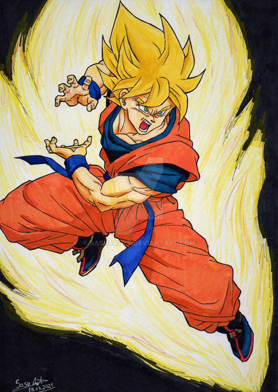
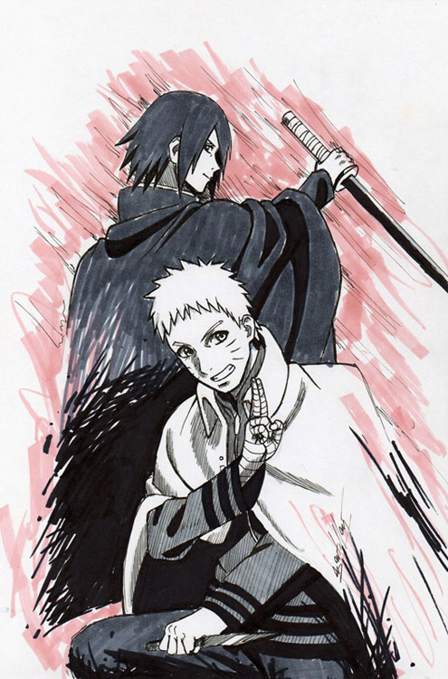
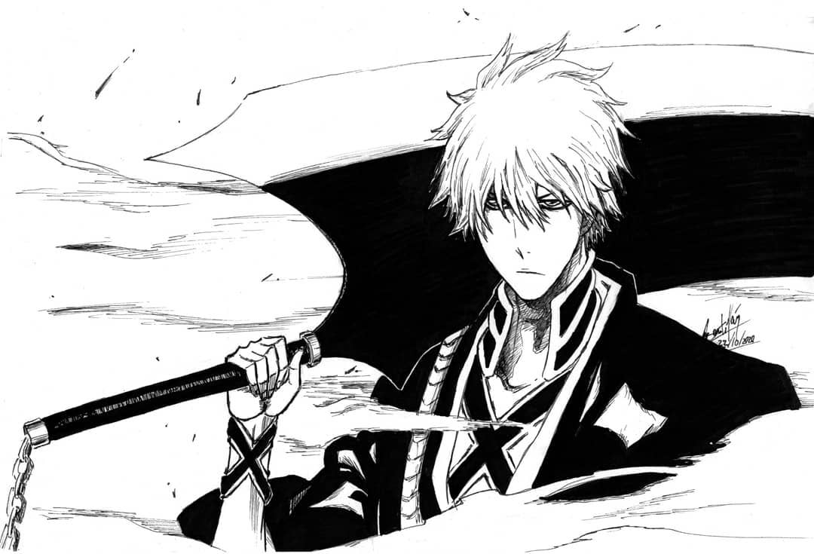
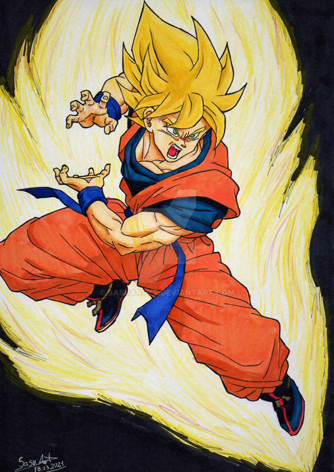
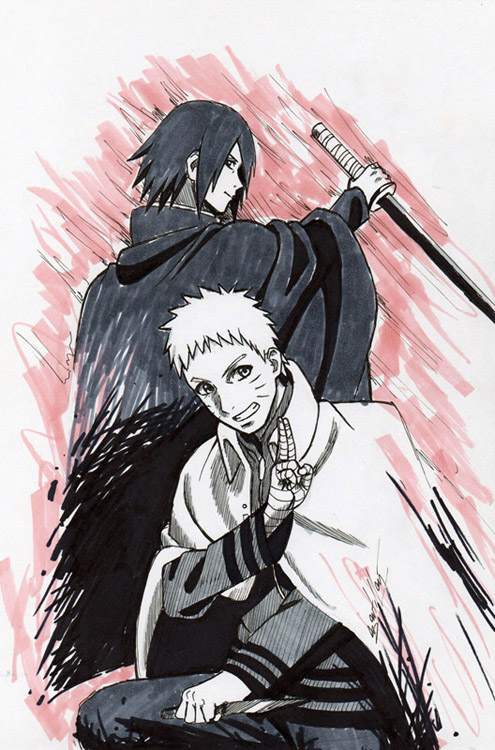
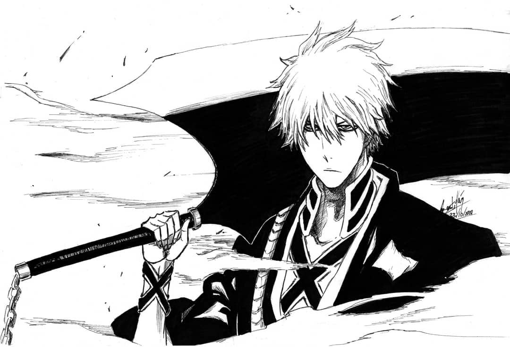

A continuación pordrán ver mis trabajos realizados. Los dibujos estan hechos de manera tradicional con materiales aconomicos, que pueden estar al alcance de cualquiera. (Lapiz, papel, lapiceras, lapices de colores, acuarelas, etc
 




